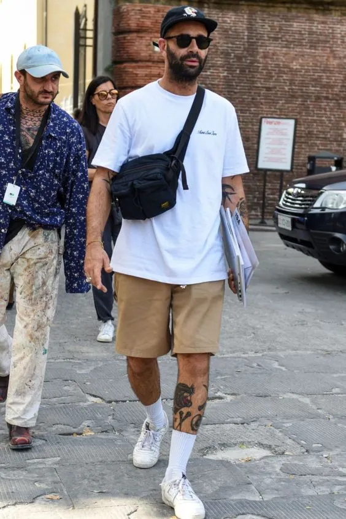
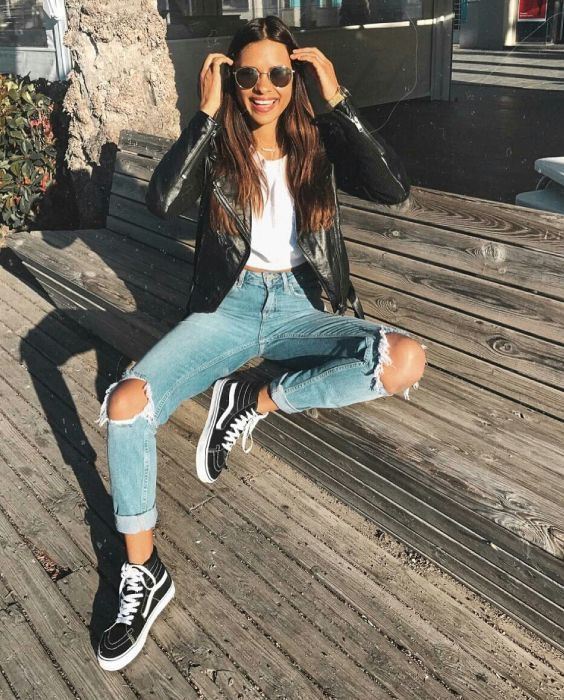
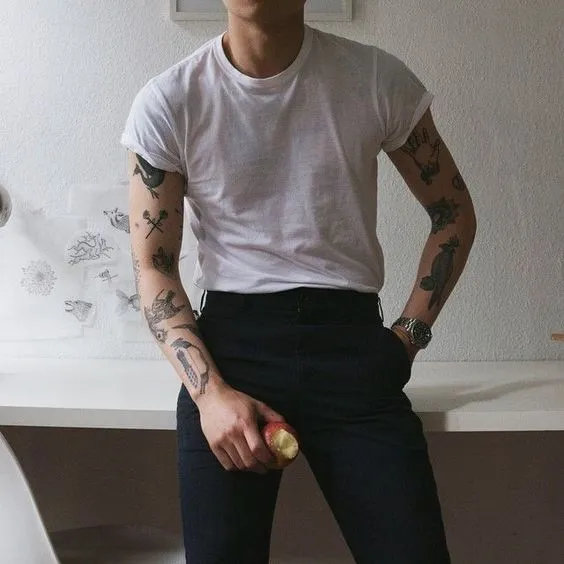
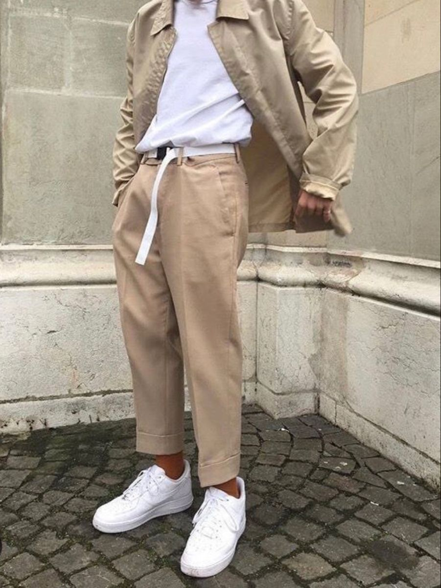
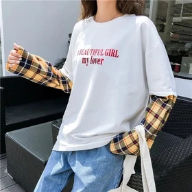

Através desta página você receberá dicas para o uso deste estilo de moda
Como dito anteriormente, a moda Old School está trazendo à tona novamente tendências dos anos 90, portanto, existem diversas formar de criar um look em torno disso.
No verão, as roupas masculinas que se destacam é o uso de bermudas acompanhadas de meias de cano alto e camisas folgadas de estampa limpa ou variada. Este tipo de look é mais informal, muito comumente usado em pequenos eventos ou cotidiano. Segue um exemplo deste tipo de look.
Já para as mulheres, podemos destacar o uso frequente de jeans rasgados e cropped. Ressaltamos que o uso de tênis é algo comum neste tipo de moda. Segue exemplo:
Já em ocasiões formais, é comum vermos os homens utilizando calças, sejam elas justas ou cargo e camisas por dentro da calça, muitas vezes acompanhadas de cinto.
No inverno, esta moda não se permite a ser deixada de lado! Os conjuntos de calça para homens acompanhadas pelo cinto são sempre de destaque, mesmo neste período, porém, seu diferencial é que frequentemente estão acompanhadas de jaquetas.
Para as mulheres, é comum também acrescentar jaquetas ao seus looks compostos por jeans, mas também podemos destacar o uso frequente de camisetas de manga longa por baixo de camisetas comuns.
